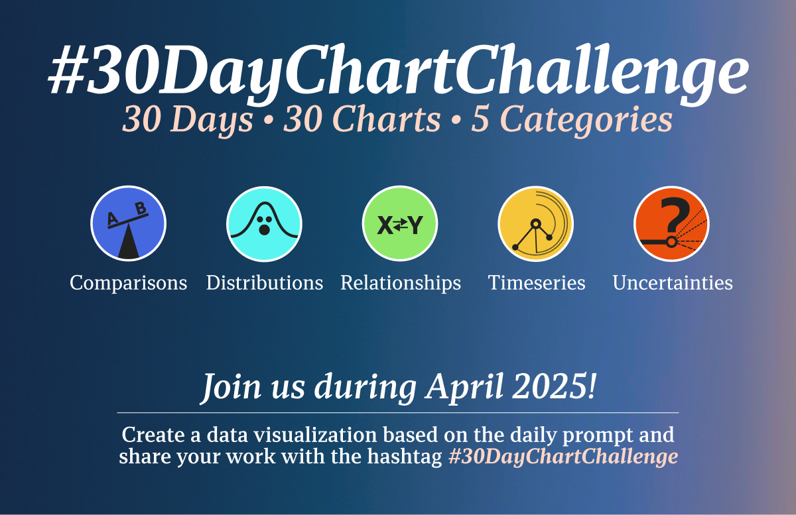

font_title <- "Fira Code"
font_text <- "IBM Plex Mono"
pal_scifi <- c(
"#06d0ce", "#09f6f8", "#076a6c", "#051416", "#d5dadb",
"#04454a", "#098b94", "#05947c", "#fefefe", "#022123"
)
space_background <- pal_scifi[10]
color_text_label <- pal_scifi[2]
color_axis_label <- pal_scifi[5]
fill_text_label <- pal_scifi[4]
fill_column <- pal_scifi[3]The Challenge
The 30DayChartChallenge is a yearly community-driven online event that presents 30 prompts for data visualizations. The challenge is organized by Cédric Scherer and Dominic Royé, with prompts categorized into themes (e.g. comparisons, distributions, relationships, etc.).

Learning
This was my first year participating in the challenge. For the sake of consistency and speed, I created almost all of my visualizations using ggplot2 and R. The first few days were tougher than I expected—it took me a while to grasp the format of the challenge. I wasted a lot of time experimenting with different datasets, trying out alternative visualizations that weren’t used. Over time, though, I got better at quickly prototyping simple versions of plots and made my code more reusable and efficient.
My simple lessons are summarized below.
- Visualize before coding
It’s usually hard to visualize the final plot, specially when dealing with an unknown dataset. I found that making very simple plots or even drawing them by hand, helped me structure the final version of the code.
- Reuse code
Code reusability is a clear advantage of using a programming language over GUI-based software, yet I’ve often fallen into the (bad) habit of starting each new visualization from scratch. As the challenge progressed, though, I began adapting and reusing more of my own code—and things became much more efficient and productive as a result.
- The
raggpackage
I’ve always used showtext to display custom fonts in plots, but ragg seems to be the superior alternative. Plots render faster and there’s no DPI issue when exporting plots. While you’re limited to local fonts, this can actually help streamline your workflow by reducing options. I found myself gravitating towards Avenir, Futura, Helvetica, and Gill Sans.
You can also download fonts from Google Fonts if you find yourself missing Roboto.
- Using variables for fonts and colors
This was a simple adaptation I made to speed up prototyping. The code snippet below is from the Extraterrestrial plot. With this setup, it’s much easier to test different fonts, colors, or even entire palettes
The code for all of my plots can be found on this GitHub repository.
Highlights
Day 4: Circles
These circular maps were my favorite visualization from the Challenge. The maps estimate the number of people living within a 6 km radius of their city’s downtown. The street colors represent nearby population density: darker shades indicate lower values, lighter shades represent higher.
I adapted the code from this post, which shows how to map altitude into streets, to show population counts. The population data was collected from the recent 2022 Census, which just recently published population couts in census tracts. The style of the maps was inspired by the prettymaps Python package made by Marcelo Prates.
Overall, these maps took a very long time to make, and were unpractical for the challenge. Running the code takes a long time, since several OSM features need to be downloaded.
Day 5: Big or Small
The idea for this visualization is to show how choropleth maps of Brazil are deceiving. Brazil’s Midwest and North regions cover about 65% of the country’s area but house only 16% of its population. As a result, these choropleth maps tend to be biased, since larger chunks of land dominate the visualization, drawing more attention regardless of their actual relevance to the underlying data. This obscures important patterns in more densely populated areas, like the Southeast and Northeast, which occupy smaller land areas but contain the majority of Brazil’s population.
Day 15: Complicated
By the second half of the challenge, I felt more confortable with the challenge, and the plots became more streamlined. This chart shows the growing gap between house sales prices and rental prices in Brazil. This is something I explored in greater detail in this post (in Portuguese).
Day 19: Smooth
This was more of a “fun” prompt. The chart shows different smoothing techniques applied to recent S&P 500 data. Naturally, the index performed poorly in April, reflecting the turbulence sparked by Trump’s tariff policies. Making this plot was relatively straightforward, since the base stats package from R already has several smoothers, such as loess, smooth, and smooth.spline. The TTR package also provides variations of MA filters, commonly used in financial analysis.
Day 21: Fossils
This was one of the quickest plots to make and shows how pre-planning really is key for this challenge. I experimented with alternative datasets from OurWorldInData and settled on the raw consumption of fossil fuels in the past 100 years.
Day 22: Stars
I already knew I wanted to use the sunspots dataset for this prompt, but Jevons helped make it more compelling. In the late 19th century, British economist Stanely Jevons theorized that sunspot cycles had an influence over agricultural productivity and, by extension, economic cycles. Although he never managed to prove his theory, many still claim the economic cycles are regulated by sunspot cycles. The last two major recessions (more or less) coincided sunspot cycle troughs, giving the theory a bit of renewed attention.
Day 25: Risk
This plot shows the EMBI+ index over the years, highlighting key political and economic events in Brazilian history. The code for this plot was adapted from my post on Brazilian hyperinflation.
Day 26: Monochrome
This plot shows the decoupling of electric energy consumption and GDP growth in Brazil. The consumption of electric energy is typically considered a good proxy for economic growth, but, since the 2014-16 recession, these series have diverged.
The code for this plot was adapted by a similar analysis I did in this post (in Portuguese).
Day 29: Extraterrestrial
This plot shows the box-office earnings from films that feature aliens. Making this plot was much easier than I imagined. I combined a Wikipedia list of alien-themed movies with domestic box-office data from BoxOfficeMojo, and used FRED to adjust the values for inflation to ensure comparability.